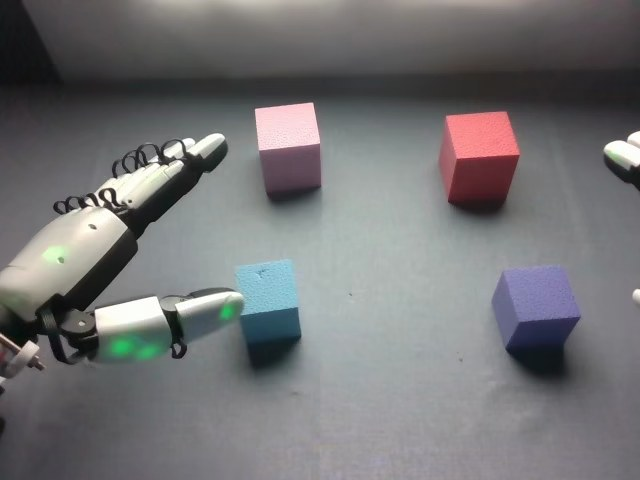

RoboCOIN · Airbot MMK2 · stack_block/episode_000008
Episode 000008

Annotation
From the dedicated visual review of this video (humanoid_action_v1). Plain text · JSON
Observed outcome
- Status
success
- Description
Two separate two-cube stacks stand at the end: the light-blue cube rests on top of the pink cube at the back left (placed slightly off-centre, with a small overhang toward the right of the view), and the purple cube rests on top of the red cube at the back right. Both hands are withdrawn (left at the left edge, right leaving at upper right). No cube was dropped and no regrasp occurred. The stacks are not one stack and no cylinder is involved.
Hand roles
- Left
Acts first (frames about 14-100). Pinches the light-blue cube between thumb and fingers/palm, lifts it, carries it to the far-left pink cube, lowers it onto the pink cube's top face and releases it (thumb withdraws about frames 90-98). It then retracts to the left edge, open and idle for the rest of the clip; it does not touch the purple or red cubes.
- Right
Idle at the right edge until about frame 100. It then enters, wraps fingers and thumb around the purple cube (about 110-124), lifts it, carries it up and over to the red cube, lowers it onto the red cube's top face, opens to release (about 156-164) and withdraws toward the upper right.
Coordination
Strictly sequential, no hand-to-hand transfer and no overlapping manipulation. The left hand has put the light-blue cube on the pink cube and is backing away (frames 94-106) before the right hand moves in; the right hand's stacking is independent of the left stack and the left hand provides no support during it.
Robot-side evidence
- Head camera looks forward over the table; the hand entering from the image-left edge is the robot's left hand and the one entering from the image-right edge is the right hand, consistent with the other evidence.
- Parquet telemetry: eef_sim_pose_state holds two end-effector poses (columns 0-5 and 6-11). The first has y = +0.17 at frame 0, drops to about +0.09 during frames 24-48 (left-hand carry), extends forward to x about 0.80 at frames 60-84 (reach to the pink cube) and returns to y about +0.20 by frame 120, then stays still. The second has y = -0.20, stays essentially still until about frame 96, then moves (x from 0.58 to 0.78, y to about -0.12) over frames 100-156 (right-hand phase) and retracts after about 170. With x forward, positive y is robot-left and negative y is robot-right.
- Wrist cameras: cam_left_wrist_rgb at frame 20 shows the light-blue cube beside the left hand (cube appears dark blue in the dim view); cam_right_wrist_rgb at frame 130 shows the purple cube held in the right hand's fingers.
- The Parquet column names for the poses were not available, so the pose-column to side mapping rests on the y-sign convention and its agreement with head-camera and wrist-camera content.
Chronology
| Frames | Observation |
|---|---|
| 0–12 | Initial frame: robot-left hand (image left) is open and pointing forward-right at the left edge, its thumb extended beside the light-blue (cyan) cube. Four cubes are on the dark table: pink at back left, red at back right, light-blue at front left next to the left hand, purple at front right. A white fingertip of the right hand just enters at the right edge. The left hand drifts forward and lowers beside the light-blue cube. |
| 14–24 | Left hand rolls over the light-blue cube with its palm and fingers above it and the white thumb (green light) below its near side; the fingers and thumb close on the cube, firmly gripped by frame 24-26. |
| 26–46 | Left hand lifts the light-blue cube clear of the table and carries it forward and slightly right toward the pink cube, rotating the forearm; the cube is held between thumb and fingers/palm. Right hand stays at the right edge, idle. |
| 48–62 | Left hand carries the light-blue cube up and back to the far left, over the pink cube; the forearm now fills the left of the view (blue cube above and in front of the pink cube at frames 50-56). |
| 64–84 | Left hand lowers and slides the light-blue cube onto the pink cube's top face (blue cube above pink at 64-72, seated on top by about 78-84); the thumb remains under or beside the blue cube while the fingers stay on its far side. |
| 86–98 | Thumb and fingers loosen and withdraw (thumb slides out at about 90-94); the light-blue cube remains on the pink cube. The left hand begins to retract; right hand still at the right edge. |
| 100–106 | Left hand backs away to the left, fingers open and pointing forward-right; a stable light-blue-on-pink stack is visible. Right hand's fingers appear at the right edge and begin moving inward. |
| 108–118 | Right hand enters from the lower right with fingers extended, thumb below the purple cube; it reaches the purple cube at about 110-114 and wraps fingers over its top/far side and the thumb at the near side. |
| 120–128 | Right hand closes on the purple cube (cube visible between thumb and fingers at 122-126), lifts it off the table (raised and tilted at about 126-128) and starts carrying it left toward the red cube. |
| 130–146 | Right hand carries the purple cube up and left, moving it to the red cube (cube reaches the red cube's upper left edge at about 132-136) while the hand rises toward the top right and is partly out of frame; the cube is positioned above the red cube from about 140-146. |
| 148–154 | Right hand lowers the purple cube onto the red cube's top face; the cube seated on the red cube by about 148-152 with thumb and fingers still around its sides. |
| 156–166 | Right fingers open and release (thumb and fingers slide off at about 156-164); the purple cube remains seated on the red cube. The right hand remains over the stack at the top right. |
| 168–191 | Right hand lifts away and withdraws toward the upper right, finally leaving only fingertips at the right edge; the left hand stays still, open, at the left edge. Final frames show light-blue cube on pink cube and purple cube on red cube, both stacks upright and stable. |
Clip selection
Complete single-task clip retained: left hand places the light-blue cube on the pink cube, then right hand places the purple cube on the red cube. Both phases belong to one stacking task, so the full 192-frame sequence is kept without cropping or first_substep splitting.
Differences from the publisher annotation
- The dataset-wide instruction speaks of square blocks placed 'in the center' by the left hand and cylindrical blocks placed 'on top' by the right hand. In this video all four objects are cubes (no cylinder); the left hand stacks a cube on a second cube at the back left, not in the table centre, and the right hand stacks a cube on a second cube at the back right.
- The scene annotation lists a green block, a yellow block in the centre, a blue block in the front-right and a glasses case. None of these are visible: the table holds only a pink, a red, a light-blue and a purple cube. The 'blue' block is the light-blue/cyan cube at front left (not front right); the front-right cube is purple.
- The scene annotation places the red and purple blocks both at 'back-right'; visibly the red cube is at back right and the purple cube at front right, and the purple cube is stacked on the red one.
- Subtask labels are otherwise consistent with the video: blue onto pink (left hand) and purple onto red (right hand). Their timing differs: 'Grasp blue' (0-38) includes approach and the lift begins from about 26; 'Place blue on pink' (39-92) covers the carry and placement, with release at about 90-98; 'Grasp purple' (93-121) mixes the left hand's withdrawal with the right hand's approach and grasp; 'Place purple on red' (122-169) starts at the lift (about 124-128) and ends at release (156-164); 'End' (170-191) is the right-hand withdrawal.
- Source labels say 'gripper' while the hands are five-finger dexterous hands; the prompt uses hand wording.
Uncertainties
- Exact finger-level grasp of the light-blue cube by the left hand (which fingers press) is partially occluded by the hand; described as pinched between thumb and fingers/palm side.
- The moment the left thumb stops touching the light-blue cube is estimated at about frames 90-98 because the hand covers the placement.
- Right-hand finger positions on the purple cube at frames 112-126 are partly hidden by the hand and the table edge of the view; the lift is estimated at about frames 124-128.
- The right hand is partly out of frame at the upper right during frames 132-166, so release of the purple cube (about 156-164) is judged from cube/hand positions.
- Robot-relative left/right rests on head-view geometry, y-sign of the end-effector poses and wrist-camera content, not on published pose column names.
- The light-blue cube sits slightly off-centre on the pink cube; the exact overhang is small.
Complete review record action_review.json
{
"prompt_protocol": "humanoid_action_v1",
"prompt_protocol_note": "Applied by analogy: this episode is a dual-arm Airbot MMK2 with five-finger dexterous hands, not a Humanoid Everyday or NVIDIA GR1 video. The humanoid_action_v1 rules (robot-relative side, per-hand roles, coordination, actual end state, shared constraint sentence, complete single-task clip) were used as written.",
"prompt_provenance": "visually_authored_from_video_and_initial_frame",
"dataset": "RoboCOIN/Airbot_MMK2_stack_block",
"task": "stack_block",
"episode_id": "episode_000008",
"generation_camera": "cam_head_rgb (robot first-person head camera)",
"source_video": "../../original/videos/chunk-000/observation.images.cam_head_rgb/episode_000008.mp4",
"generation_video": "../video.mp4",
"conditioning_first_frame": "../first_frame.png",
"action_prompt": "../actiongeneration_prompt.txt",
"source_frame_count": 192,
"fps": 30,
"resolution": {
"width": 640,
"height": 480
},
"selected_source_frame_start": 0,
"selected_source_frame_end_exclusive": 192,
"selection_reason": "Complete single-task clip retained: left hand places the light-blue cube on the pink cube, then right hand places the purple cube on the red cube. Both phases belong to one stacking task, so the full 192-frame sequence is kept without cropping or first_substep splitting.",
"usable_prompt": "The robot's left hand, on the left of the view, pinches the light-blue cube between thumb and fingers, lifts it, carries it onto the pink cube at the back left and releases it. The robot's right hand then closes its fingers around the purple cube, lifts it, carries it onto the red cube at the back right and releases it, then withdraws upward. Two stacks remain: light-blue on pink and purple on red. Keep the camera fixed; preserve robot geometry, physically valid joint motion, and normal gripper opening and closing.",
"chronology": [
{
"frames": [
0,
12
],
"observation": "Initial frame: robot-left hand (image left) is open and pointing forward-right at the left edge, its thumb extended beside the light-blue (cyan) cube. Four cubes are on the dark table: pink at back left, red at back right, light-blue at front left next to the left hand, purple at front right. A white fingertip of the right hand just enters at the right edge. The left hand drifts forward and lowers beside the light-blue cube."
},
{
"frames": [
14,
24
],
"observation": "Left hand rolls over the light-blue cube with its palm and fingers above it and the white thumb (green light) below its near side; the fingers and thumb close on the cube, firmly gripped by frame 24-26."
},
{
"frames": [
26,
46
],
"observation": "Left hand lifts the light-blue cube clear of the table and carries it forward and slightly right toward the pink cube, rotating the forearm; the cube is held between thumb and fingers/palm. Right hand stays at the right edge, idle."
},
{
"frames": [
48,
62
],
"observation": "Left hand carries the light-blue cube up and back to the far left, over the pink cube; the forearm now fills the left of the view (blue cube above and in front of the pink cube at frames 50-56)."
},
{
"frames": [
64,
84
],
"observation": "Left hand lowers and slides the light-blue cube onto the pink cube's top face (blue cube above pink at 64-72, seated on top by about 78-84); the thumb remains under or beside the blue cube while the fingers stay on its far side."
},
{
"frames": [
86,
98
],
"observation": "Thumb and fingers loosen and withdraw (thumb slides out at about 90-94); the light-blue cube remains on the pink cube. The left hand begins to retract; right hand still at the right edge."
},
{
"frames": [
100,
106
],
"observation": "Left hand backs away to the left, fingers open and pointing forward-right; a stable light-blue-on-pink stack is visible. Right hand's fingers appear at the right edge and begin moving inward."
},
{
"frames": [
108,
118
],
"observation": "Right hand enters from the lower right with fingers extended, thumb below the purple cube; it reaches the purple cube at about 110-114 and wraps fingers over its top/far side and the thumb at the near side."
},
{
"frames": [
120,
128
],
"observation": "Right hand closes on the purple cube (cube visible between thumb and fingers at 122-126), lifts it off the table (raised and tilted at about 126-128) and starts carrying it left toward the red cube."
},
{
"frames": [
130,
146
],
"observation": "Right hand carries the purple cube up and left, moving it to the red cube (cube reaches the red cube's upper left edge at about 132-136) while the hand rises toward the top right and is partly out of frame; the cube is positioned above the red cube from about 140-146."
},
{
"frames": [
148,
154
],
"observation": "Right hand lowers the purple cube onto the red cube's top face; the cube seated on the red cube by about 148-152 with thumb and fingers still around its sides."
},
{
"frames": [
156,
166
],
"observation": "Right fingers open and release (thumb and fingers slide off at about 156-164); the purple cube remains seated on the red cube. The right hand remains over the stack at the top right."
},
{
"frames": [
168,
191
],
"observation": "Right hand lifts away and withdraws toward the upper right, finally leaving only fingertips at the right edge; the left hand stays still, open, at the left edge. Final frames show light-blue cube on pink cube and purple cube on red cube, both stacks upright and stable."
}
],
"anatomical_side_evidence": [
"Head camera looks forward over the table; the hand entering from the image-left edge is the robot's left hand and the one entering from the image-right edge is the right hand, consistent with the other evidence.",
"Parquet telemetry: eef_sim_pose_state holds two end-effector poses (columns 0-5 and 6-11). The first has y = +0.17 at frame 0, drops to about +0.09 during frames 24-48 (left-hand carry), extends forward to x about 0.80 at frames 60-84 (reach to the pink cube) and returns to y about +0.20 by frame 120, then stays still. The second has y = -0.20, stays essentially still until about frame 96, then moves (x from 0.58 to 0.78, y to about -0.12) over frames 100-156 (right-hand phase) and retracts after about 170. With x forward, positive y is robot-left and negative y is robot-right.",
"Wrist cameras: cam_left_wrist_rgb at frame 20 shows the light-blue cube beside the left hand (cube appears dark blue in the dim view); cam_right_wrist_rgb at frame 130 shows the purple cube held in the right hand's fingers.",
"The Parquet column names for the poses were not available, so the pose-column to side mapping rests on the y-sign convention and its agreement with head-camera and wrist-camera content."
],
"arm_roles": {
"left": "Acts first (frames about 14-100). Pinches the light-blue cube between thumb and fingers/palm, lifts it, carries it to the far-left pink cube, lowers it onto the pink cube's top face and releases it (thumb withdraws about frames 90-98). It then retracts to the left edge, open and idle for the rest of the clip; it does not touch the purple or red cubes.",
"right": "Idle at the right edge until about frame 100. It then enters, wraps fingers and thumb around the purple cube (about 110-124), lifts it, carries it up and over to the red cube, lowers it onto the red cube's top face, opens to release (about 156-164) and withdraws toward the upper right."
},
"coordination": "Strictly sequential, no hand-to-hand transfer and no overlapping manipulation. The left hand has put the light-blue cube on the pink cube and is backing away (frames 94-106) before the right hand moves in; the right hand's stacking is independent of the left stack and the left hand provides no support during it.",
"observed_outcome": {
"status": "success",
"description": "Two separate two-cube stacks stand at the end: the light-blue cube rests on top of the pink cube at the back left (placed slightly off-centre, with a small overhang toward the right of the view), and the purple cube rests on top of the red cube at the back right. Both hands are withdrawn (left at the left edge, right leaving at upper right). No cube was dropped and no regrasp occurred. The stacks are not one stack and no cylinder is involved."
},
"source_annotation": {
"task_prompt": "place the square building blocks in the center with left hand and put the cylindrical building blocks on top with right hand.",
"scene_annotation": "The green block is in the front-left, The red block is in the back-right, The blue block is in the front-right, The yellow block is in the center, The purple block is in the back-right, The glasses case is in the front-right",
"subtask_timeline": [
{
"frames": [
0,
38
],
"label": "Grasp the blue build blocks with the left gripper"
},
{
"frames": [
39,
92
],
"label": "Place the blue build blocks on the pink build block with the left gripper"
},
{
"frames": [
93,
121
],
"label": "Grasp the purple build blocks with the right gripper"
},
{
"frames": [
122,
169
],
"label": "Place the purple build blocks on the red build block with the right gripper"
},
{
"frames": [
170,
191
],
"label": "End"
}
]
},
"source_annotation_discrepancies": [
"The dataset-wide instruction speaks of square blocks placed 'in the center' by the left hand and cylindrical blocks placed 'on top' by the right hand. In this video all four objects are cubes (no cylinder); the left hand stacks a cube on a second cube at the back left, not in the table centre, and the right hand stacks a cube on a second cube at the back right.",
"The scene annotation lists a green block, a yellow block in the centre, a blue block in the front-right and a glasses case. None of these are visible: the table holds only a pink, a red, a light-blue and a purple cube. The 'blue' block is the light-blue/cyan cube at front left (not front right); the front-right cube is purple.",
"The scene annotation places the red and purple blocks both at 'back-right'; visibly the red cube is at back right and the purple cube at front right, and the purple cube is stacked on the red one.",
"Subtask labels are otherwise consistent with the video: blue onto pink (left hand) and purple onto red (right hand). Their timing differs: 'Grasp blue' (0-38) includes approach and the lift begins from about 26; 'Place blue on pink' (39-92) covers the carry and placement, with release at about 90-98; 'Grasp purple' (93-121) mixes the left hand's withdrawal with the right hand's approach and grasp; 'Place purple on red' (122-169) starts at the lift (about 124-128) and ends at release (156-164); 'End' (170-191) is the right-hand withdrawal.",
"Source labels say 'gripper' while the hands are five-finger dexterous hands; the prompt uses hand wording."
],
"uncertainties": [
"Exact finger-level grasp of the light-blue cube by the left hand (which fingers press) is partially occluded by the hand; described as pinched between thumb and fingers/palm side.",
"The moment the left thumb stops touching the light-blue cube is estimated at about frames 90-98 because the hand covers the placement.",
"Right-hand finger positions on the purple cube at frames 112-126 are partly hidden by the hand and the table edge of the view; the lift is estimated at about frames 124-128.",
"The right hand is partly out of frame at the upper right during frames 132-166, so release of the purple cube (about 156-164) is judged from cube/hand positions.",
"Robot-relative left/right rests on head-view geometry, y-sign of the end-effector poses and wrist-camera content, not on published pose column names.",
"The light-blue cube sits slightly off-centre on the pink cube; the exact overhang is small."
],
"inspection_coverage": {
"frames_decoded": 192,
"frames_sampled_in_contact_sheets": 96,
"sample_stride": 2,
"sampled_frame_indices": "0, 2, ..., 190 (every second decoded frame)",
"native_resolution_frames_inspected": [
0,
24,
52,
84,
94,
110,
124,
148,
164,
176,
191
],
"initial_png_inspected": true,
"initial_png_note": "generation input/first_frame.png inspected at native 640x480 after the full sequence; it matches decoded frame 0.",
"other_cameras_and_telemetry_used": [
"cam_left_wrist_rgb frame 20",
"cam_right_wrist_rgb frame 130",
"original parquet eef_sim_pose_state"
],
"temporary_images_location": "/tmp/rv_review/robocoin_episode_000008/ (deleted after review)"
},
"evidence_frame_indices": [
0,
14,
24,
40,
52,
78,
94,
106,
112,
124,
132,
148,
156,
164,
176,
191
],
"review_completed_at": "2026-10-15T20:35:29Z",
"dedicated_review_agent": "review_robocoin_episode_000008"
}